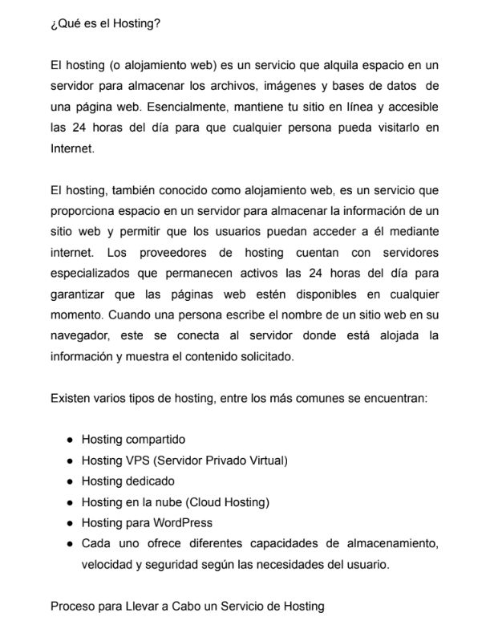
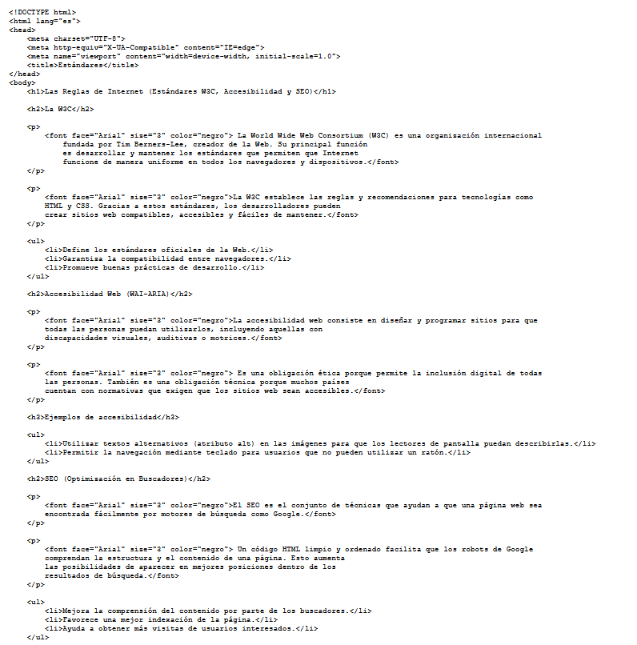

Segundo Avance Sitio Web (Portafolio de Evidencias)
Esta actividad nos demostró que el diseño digital no se queda solo en saber editar una foto, sino en saber cómo presentar nuestro trabajo al mundo de forma profesional. Diseñar la estructura de un sitio web, desde el Index hasta las páginas de evidencias, nos ayuda a entender la importancia de la arquitectura de la información y la experiencia de usuario (UX). Al final, este portafolio no solo sirve para entregar las tareas del parcial, sino que nos da una base súper real de cómo los diseñadores y profesionales muestran sus proyectos en el entorno digital actual.

Participación 3: Hosting
Esta investigación nos demostró que el diseño y desarrollo de un sitio web no termina cuando terminamos de acomodar las imágenes o escribir el código en la computadora; la etapa de publicación en la nube es igual de crucial. Comprender qué es el hosting, cómo funciona el proceso de despliegue a través del servidor y conocer las opciones que ofrece el mercado nos da una visión completa y real de cómo se maneja internet hoy en día. Al final, este ejercicio nos ayudó a conectar la parte creativa de nuestro portafolio de evidencias con la parte técnica de la ingeniería web, enseñándonos que para ser creadores digitales competitivos debemos dominar todo el proceso: desde el primer trazo en Photoshop hasta el momento en que nuestro proyecto está en vivo y disponible para todo el mundo.
Ver PDF
Participación 4: El Viaje de una Página Web (Cliente, Servidor y HTTP)
Esta práctica nos permitió entender que internet no es una entidad mágica ni abstracta, sino una infraestructura física y lógica perfectamente coordinada. Comprender la arquitectura cliente-servidor y el funcionamiento del protocolo HTTP/HTTPS nos cambia por completo la perspectiva como diseñadores y creadores de contenido; ahora sabemos que cada decisión de diseño (como el peso de una imagen editada en Photoshop o la estructura del código HTML) impacta directamente en la velocidad y eficiencia de este viaje digital. Al final, este ejercicio nos da las bases técnicas para asegurar que nuestros futuros proyectos web no solo sean visualmente atractivos, sino también seguros, funcionales y optimizados para la experiencia real del usuario en la red.
Ver PDF
Participación 5: Las Reglas de Internet (Estándares W3C, Accesibilidad y SEO)
Esta práctica nos demostró que programar una página web va mucho más allá de lograr que se vea bonita en nuestra computadora. Crear un archivo desde cero en Visual Studio Code y analizar las etiquetas automáticas de la cabecera nos hizo entender que el código es una estructura lógica que debe comunicarse con navegadores, buscadores y tecnologías de asistencia de manera universal. Aprendimos que el desarrollo semántico no es un capricho técnico, sino una responsabilidad social; la accesibilidad web y los estándares de la W3C garantizan que internet sea un lugar inclusivo, mientras que un código limpio es la clave para que proyectos reales tengan éxito en Google mediante el SEO. Al final, esta actividad nos cambia la perspectiva: un buen desarrollador no solo escribe código para que funcione, sino para que sea accesible, profesional y duradero en la red.
Ver PDF
Participación 6: Auditoría y Plan de Lanzamiento al Hosting
Esta práctica nos demostró que la programación web exige una disciplina rigurosa no solo al escribir código, sino al organizar nuestros archivos en el sistema local. Llevar a cabo una auditoría de nombres y rutas en Visual Studio Code nos hizo entender la diferencia crítica entre un entorno de desarrollo local y un servidor de producción real; detalles que parecen mínimos, como una mayúscula, un espacio o una ruta absoluta, son suficientes para romper por completo los enlaces o los archivos multimedia en internet. Además, planificar el despliegue en plataformas como GitHub Pages o Netlify nos aterriza en el flujo de trabajo moderno que utilizan los desarrolladores profesionales. En conclusión, esta actividad fue indispensable para automatizar buenas prácticas de orden y estructura, asegurando que nuestro portafolio de evidencias sea un producto digital 100% compatible, eficiente y listo para ser publicado globalmente sin errores.
Ver PDF